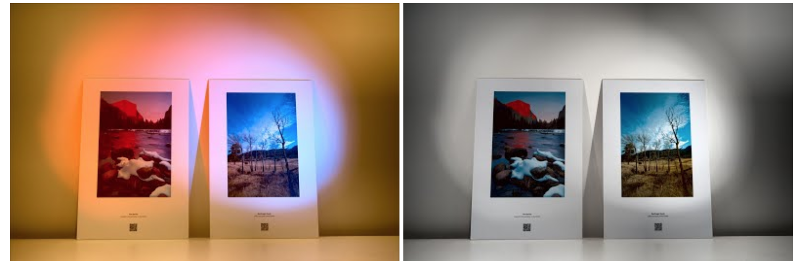
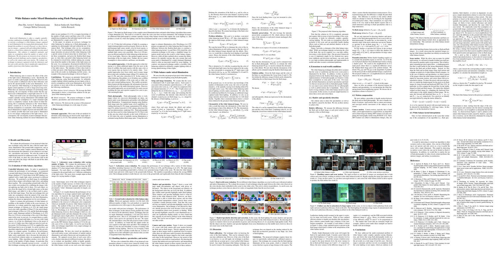

Real-world illumination is often a complex spatially-varying combination of multiple illuminants. In this work, we present a technique to white-balance images captured in such illumination by leveraging flash photography. Even though this problem is severely ill-posed, we show that using two images -- captured with and without flash lighting -- leads to a closed form solution for spatially-varying mixed illumination. Our solution is completely automatic and makes no assumptions about the number or nature of the illuminants. We also propose an extension of our scheme to handle practical challenges such as shadows, specularities, as well as the camera and scene motion. We evaluate our technique on datasets captured in both the laboratory and the real-world, and show that it significantly outperforms a number of previous white balance algorithms.
Zhuo Hui, Kalyan Sunkavalli, Sunil Hadap, and Aswin C. Sankaranarayanan
ICCP 2016
We provide our source code together with the dataset used in the paper at here.